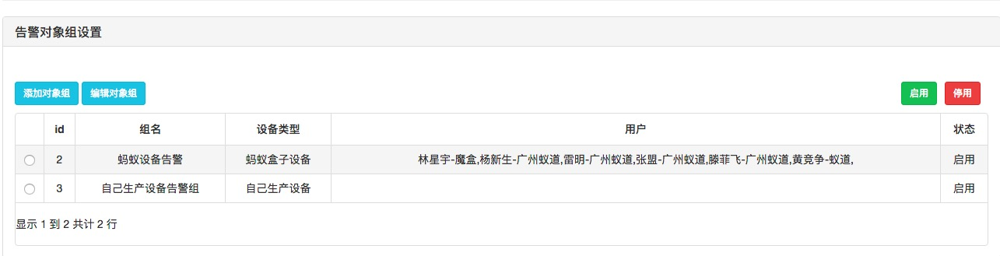
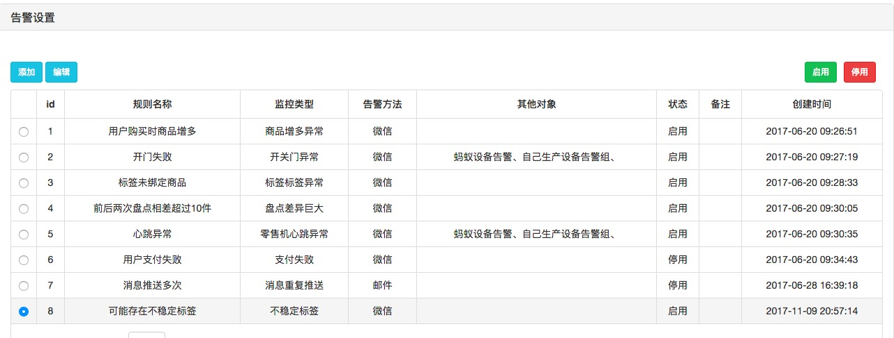

告警系统可以监控类型包括异常日志里面的所有类型，换句话说就是把异常日志通过微信消息模板、短信、邮件发给需要通知的对象。
通过添加告警规则来实现告警监控：
规则名称：主要是标识当前的告警规则是干什么的；
告警类型：这个规则触发的异常类型，比如开门失败，当有开门失败的异常日志，就发触发当前的开门失败监控规则；
告警方式：可以通过短信、微信、邮件来通知告警人；
告警对象组：首先默认的告警对象是设备管理员，其次是选择的告警组；为什么有告警组的概念，比如选择的设备有蚂蚁盒子提供的，也有自己研发的设备，后期还会有自助扫码、视觉设备，这些设备的提供方都不是固定的，如果设备出现问题的时候，肯定是需要通知相应的售后来解决问题，所以告警组就产生了，告警组是根据设备类型来划分，多个告警对象放到一个组里面，就是一个告警对象组，当告警规则被触发时，会自动把告警消息发送给告警组里面的所有人；所以正常来说，告警组会根据设备的类型不同，而产生多个告警组，建议默认告警组有【蚂蚁设备告警组、自己生成设备告警组】，By the way,也可以不选择任何告警对象组，比如跟业务相关的告警，只通知给设备管理员就行
告警对象：可以通过扫码微信填写信息提交，每个商户之间的告警对象是隔离的，A商户看不到B商户的告警对象，当出现某个售后同事同时为A商户、B商户提供服务，需要该售后同事同事提交两次信息，区别不同的商户。
告警对象组：多个告警对象组合到一个告警组，告警对象组直接跟告警规则关联；告警组中重要的标识是设备类型；
如有疑问直接找袁经理，以下是参考配置
 